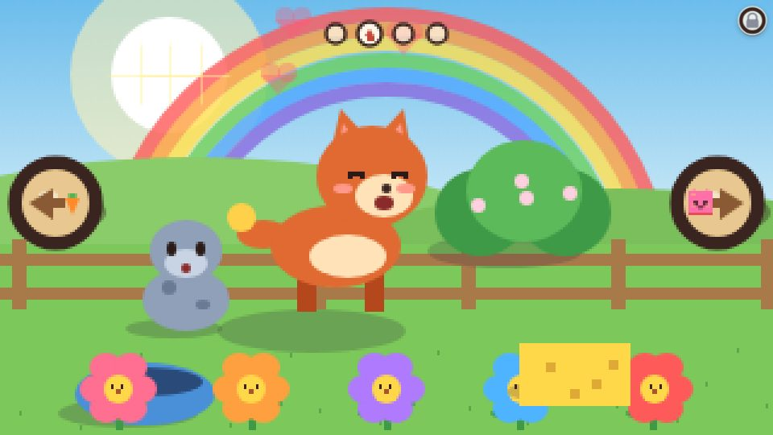

How a visit works
Open Little Ranch from the homepage. The baby is a Cindercub. Tap the bowl and it trots over and eats. Drag the sponge, or just tap it, and the baby gets bubbly. Tap the bubbles to pop them. Tap the bush and the baby hides. Tap again, or wait, for peekaboo. Tap the baby and it giggles. A tap on empty grass makes a sparkle and a note.
The ranch is four stretches side by side. Round wooden arrows at the sides glide you from one to the next. Each arrow carries a small picture of the stretch it leads to: a carrot, a flower, blocks, or a barn. If a little one goes quiet for about six seconds, the next untried thing glows and bobs. Any touch hides that glow. Where two things overlap, the nearest one answers.

On about half of visits a baby Pebblit wanders in from the side. It eats from the bowl too, and the sponge bubbles it after the Cindercub. Tap the Pebblit and the two nuzzle. Some visits it simply does not come. That is the visit, not a missing piece.
The meadow, where the baby starts
- Flowers. A row of five along the front. Each sings its own note and bobs, and the baby dances. A finger run along the row makes a little song. At night the flowers close.
- The sun. In the daytime, each tap makes it a little brighter. The fifth tap raises a rainbow while the baby looks up and cheers. It fades, and you can do it again.
- The hat basket. Each tap puts the next hat on the baby’s head: a straw sun hat, a party hat, a crown, a flower crown, a cowboy hat, then a bare head, and round again. The hat stays until the next one.
The stretch with the cloud
Tap the cloud and soft rain falls for a few seconds. Another tap keeps it going. When it stops, two puddles shine and a rainbow comes out. Tap a puddle and the baby runs over and jumps in. The puddles dry up after about a minute. There is no cloud at night.
Two picture signs stand here.
- A bowl of berries opens the Snack Kitchen. Four foods sit on the table: berries, a carrot, a lemon and broccoli. Tap one and it hops into the bowl. Berries get a happy yum. The others get a funny face and a silly sound, never a wrong answer. After three bowls of berries the baby is full, cheers, and walks home. Left alone, the berries glow.
- A lump of dough and a rolling pin opens the Dough Table. Tap the dough and it squishes flat. Rub a finger over the table and it rolls back into a ball. Tap the cutter and it stamps out a little dough baby that hops away. There is always more dough. Three little babies, then a cheer, then home.
The stretch with the stage and the blocks
- The ball. Tap it and it rolls. The baby runs over and kicks. There is no goal to miss. At night a tap only makes a soft boing, and the baby sleeps on.
- The stage picture opens the Barn Band. Tap the three players for a drum, bells and a horn. Tap the stick and they play Twinkle Twinkle Little Star together. The barn picture goes home.
- The stacked blocks open the Block Tower. Tap a block on the shelf and it drops onto the stack. Tap the baby and the tower tumbles. It does not fall by itself. The barn picture goes home.
The stretch with three picture signs
- A red barn door opens the Busy Barn Door. Five things answer at once, in any order: a doorbell, a light switch, a latch, a slide bolt, and a crank that spins a windmill. When all five have been tried, the door swings open and the baby peeks out. Then home.
- Paint pots and a brush open the Paint Shed. Four fat pots and a big outline of the baby. Tap a pot, then tap or drag over a part: head, body, tail, legs. A tap near a part counts. When every part has colour there are sparkles, and the painted baby walks back out in those colours until bedtime. Nothing about the paint is saved for the next visit.
- A wagon and a red car open the Little Wagon. Tap each baby, or its car, and it hops in and waves. Tap the wagon and a gentle creature pulls it down the valley. Along the way: a windmill that spins, a pond that splashes, and woolies that baa. A coloured gate stops the wagon. Tap any car and the gate swings open. The car that matches the gate gets the bigger cheer, and the other car is not wrong. At the end of the road the babies hop off and walk home.
Every one of these places has a barn picture that goes home at any time. A step left alone is never a failure.
Bedtime, and the morning after
After about a dozen happy things, or about six minutes, the baby yawns. The sky turns orange and waits at sunset. Then the routine, in order:
- A toothbrush. Tap it and the baby brushes, with foamy bubbles.
- A cup. Tap it for a big drink.
- Goodnight to each friend. Tap the flowers and they yawn and close. If the Pebblit is visiting, tap it and it waves.
A step left alone for about nine seconds does itself. Then a lullaby, and the baby curls up. Taps around a sleeping baby only twinkle stars. Six taps on the sleeping baby wake it: it stirs, the zzz shrink, and on the sixth it wakes happy. A fresh sunny day starts, the same as a new visit. Paint from the shed does not come back.
Once the baby is asleep, tap the moon. It glows a little more each time. The third tap plays the first verse of Twinkle Twinkle Little Star, a traditional tune played softly in the game, while the stars twinkle. The baby sleeps on. Those moon taps do not count toward the six wake-up taps. With the sound off, the stars still dance.
If the device can speak, it says “Cindercub”, “Pebblit”, the colours, the foods, and “Night night”. Nothing is written on the ranch. Sound off means silence. There is no microphone, and a parent’s own recording is not in the game.
The lock in the corner
Hold the lock for three seconds. A card offers New visit, Sound on or off, Arcade, and Back to play. Tap the X, or anywhere outside the card, to close it. Sound is on at the start. The choice is the only thing stored, under the name little-ranch-settings-v1. A new visit does not need that card: six taps on the sleeping baby also start the day again.
There are no scores, timers to beat, lives, wrong answers, links out, purchases, or a feedback button. The whole toy is the visit described above.